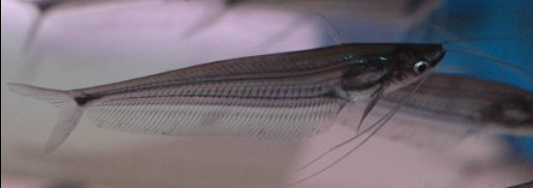
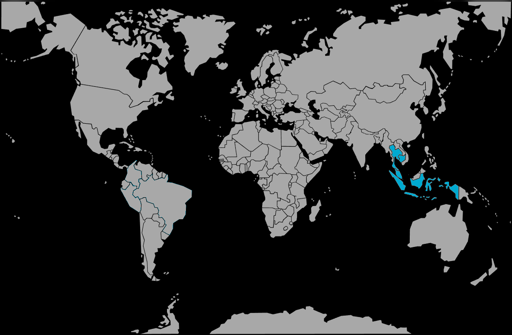

Systématique
- Ordre : Siluriformes
- Famille : Siluridae
- Genre : Kryptopterus
- Espèce : K. limpok
- Syn. : Silurus limpok

Kryptopterus limpok est un siluridé asiatique décrit par Bleeker en 1852. Il est connu localement sous le nom de "Limpok".
C'est une espèce de grande taille, pouvant atteindre 20 à 25 cm, voire davantage selon certaines sources. Contrairement au célèbre K. vitreolus, il n'est pas transparent. Son corps est opaque, jaunâtre à grisâtre, avec parfois une nuance lilas ou pourpre sous certains éclairages.
Il se distingue principalement de l'espèce très similaire Kryptopterus apogon par la longueur de ses barbillons maxillaires : chez K. limpok, les barbillons sont très longs et dépassent l'origine de la nageoire anale, alors qu'ils sont beaucoup plus courts chez K. apogon. Comme les autres espèces du genre, la nageoire dorsale est absente ou vestigiale.
C'est un poisson pélagique (pleine eau) et grégaire, vivant en bancs. Il est actif et nécessite beaucoup d'espace de nage.
Bien que généralement indifférent aux poissons de taille similaire, c'est un prédateur piscivore efficace doté d'une bouche assez grande. Il avalera sans hésiter tout poisson qui tient dans sa bouche (petits tétras, danios, etc.). Il apprécie les zones où le courant est modéré et l'eau un peu trouble.
Mode : ovipare.
Aucune information précise n'est disponible concernant la reproduction en aquarium. Dans la nature, c'est un poisson qui fréquente les zones inondées des forêts et des plaines durant la saison des pluies pour frayer.
Dimorphisme sexuel : Non documenté visuellement, hormis la rondeur abdominale des femelles gravides.
Espérance de vie : Probablement 5 à 8 ans ou plus, étant donné sa taille robuste.
Il est originaire d'Asie du Sud-Est, avec une large répartition comprenant la Thaïlande (bassins du Mékong et du Chao Phraya), la péninsule malaise, ainsi que les îles de Sumatra et Bornéo (fleuves Kapuas, Batang Hari, etc.).
Il habite les rivières principales aux eaux souvent turbides (chargées de sédiments) et pénètre dans les plaines inondées à la saison des crues.
Répartition

Origine naturelle :
- Asie du Sud-Est.
- Indonésie (Sumatra, Bornéo).
- Thaïlande (Mékong, Chao Phraya).
- Malaisie.
- Cambodge.
Paramètres de maintenance
Température : 24 à 27 °C.
pH : 6,0 à 7,5.
GH : 5 à 15 °dGH.
Volume conseillé : Minimum 500 à 600 L. En raison de sa taille adulte importante (25 cm) et de la nécessité de le maintenir en groupe, un aquarium de très grand volume est indispensable.
Régime alimentaire
Régime : carnivore / piscivore.
Dans la nature, il se nourrit principalement de poissons, de crevettes et d'insectes aquatiques.
En aquarium, il nécessite une alimentation carnée conséquente : proies vivantes, chair de poisson, crevettes, vers de terre et granulés pour carnivores.